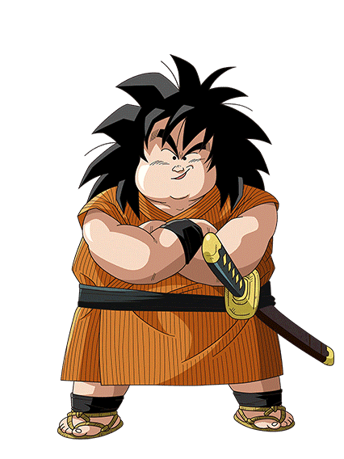

Boring ending

Finalmente encuentras a Yajirobe, un guerrero terrícola que posee una espada. Parece amable, al hablarle empieza a contarte su historia de cómo una vez venció a un mono gigante extraterrestre con su katana.
De tanto escuchar humo, decides tirarte de la torre y volver al inicio. Fin del trayecto.
Volver